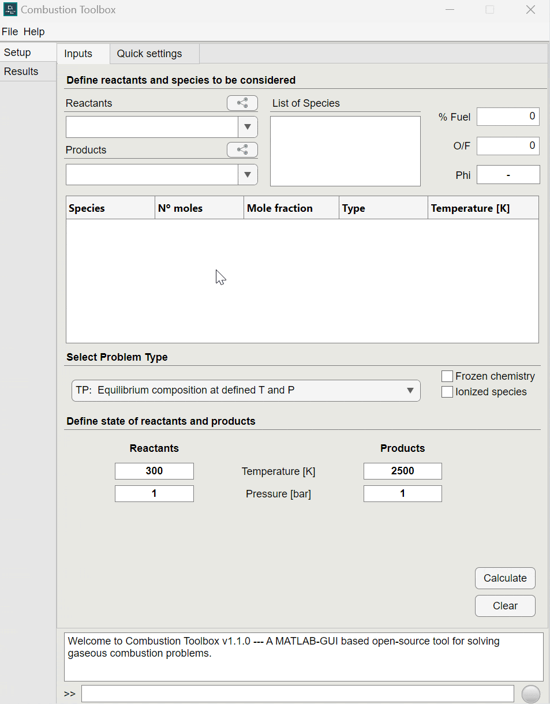
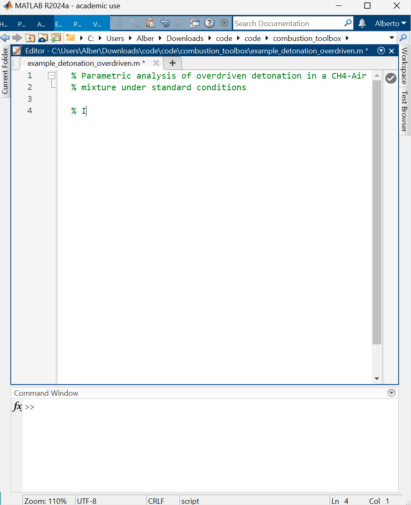
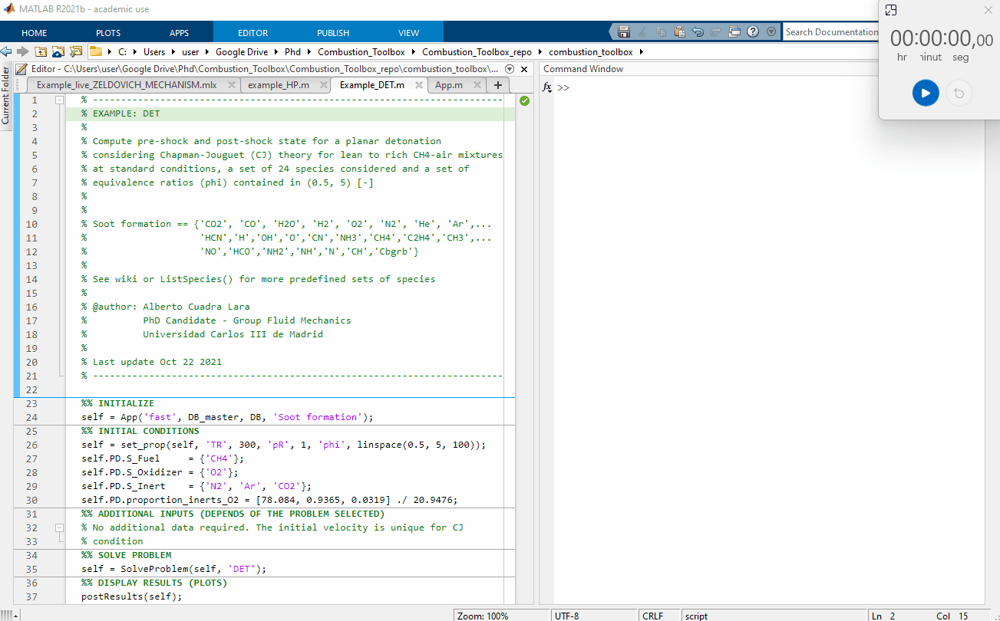
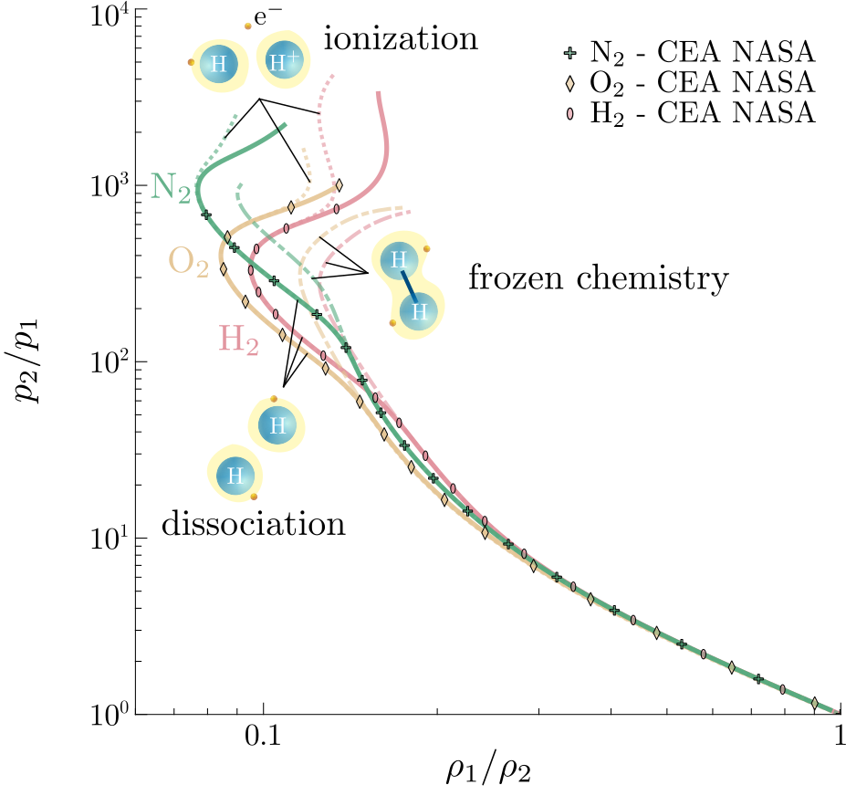
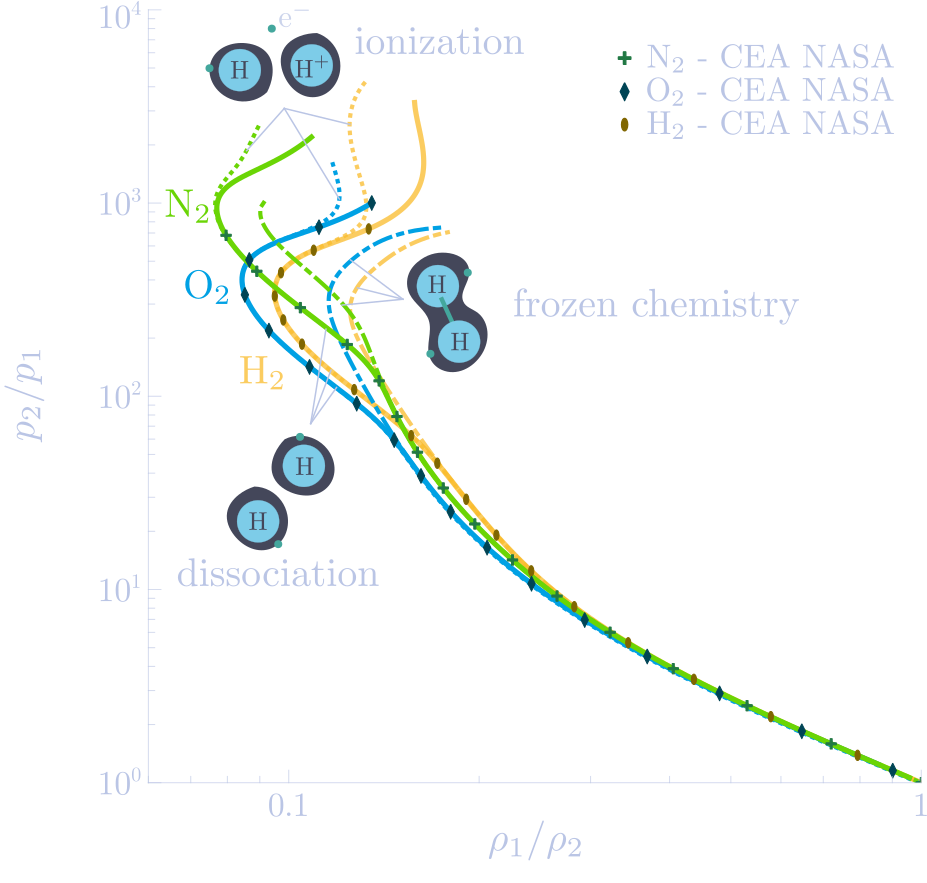

Combustion Toolbox in action#
 
Combustion Toolbox capabilities#
Combustion Toolbox [Cuadra et al., 2024] is a GUI-based thermochemical code written in MATLAB with an equilibrium kernel based on the mathematical formulation set forth by NASA in its CEA code [Gordon and McBride, 1994]. The thermodynamic properties of the gaseous species are modeled with the ideal gas equation of state (EoS), and an up-to-date version of NASA’s 9-coefficient polynomial fits from [McBride, 2002, Burcat and Ruscic, 2005, Ruscic et al., 2005]. CT is a new thermochemical code written from scratch in a modular architectural format composed of three main modules: CT-EQUIL, CT-SD, and CT-ROCKET.
CT-EQUIL: computes the composition at the equilibrium of multi-component gas mixtures that undergo canonical thermochemical transformations from an initial state (reactants), defined by its initial composition, temperature, and pressure, to a final state (products), defined by a set of chemical species (in gaseous—included ions—or pure condensed phase) and two thermodynamic state functions, such as enthalpy and pressure, e.g., for isobaric combustion processes.
CT-SD: solves steady-state shock and detonation waves in either normal or oblique incidence.
CT-ROCKET: computes the theoretical performance of rocket engines under highly idealized conditions.
Even though all modules are enclosed in a user-friendly GUI, they can also be accessed from MATLAB’s command line (in plain code mode).
There is a fourth closed-source (i.e., proprietary) module, CT-EXPLO, that estimates the theoretical properties of high explosive mixtures and multi-component propellants with non-ideal EoS. Although still under development, CT-EXPLO is distributed in its current form as the thermochemical module of SimEx [Sánchez-Monreal et al., 2022] subject to a proprietary license. Further details on this module will be provided elsewhere.
This MATLAB-GUI thermochemical code represents the core of an ongoing research work the has been used to investigate a series of problems during the last few years [Sánchez-Monreal et al., 2022, Cuadra et al., 2020, Huete et al., 2021, Cuadra et al., 2023].
Start here!#
Gallery#
Here we show some results obtained using the Combustion Toolbox.

Figure 1: Performance test, 100 Chapman-Jouguet pre-detonation and post-detonation states for a lean to rich CH4-air mixtures at standard conditions $(T_1 = 300$ K and pressure $p_1 = 1$ bar$)$. The computational time was of 2.86 seconds using a Intel(R) Core(TM) i7-8700 CPU @ 3.20GHz for a set of 24 species considered.


Figure 2: Variation of the molar fractions $X_j$ for a TP transformation of a Silica-Phenolic mixture at atmospheric pressure $(p = 1$ atm$)$ with $T \in [200, 5000]$; line: numerical results obtained with CT; symbols: numerical results obtained with NASA’s CEA [Gordon and McBride, 1994].


Figure 3: Hugoniot curves for different molecular gases at pre-shock temperature $T_1 = 300$ K and pressure $p_{1} = 1$ atm [numerical results obtained with Combustion Toolbox (lines) and contrasted with NASA’s Chemical Equilibrium with Applications (CEA) code [Gordon and McBride, 1994] excluding ionization (symbols)].


Figure 4: Variation of molar fraction for a CJ detonation for lean to rich CH4-air mixtures at standard conditions $(T_1 = 300$ K and pressure $p_1 = 1$ atm$)$; line: numerical results obtained with Combustion Toolbox; circles: NASA’s Chemical Equilibrium with Applications code [Gordon and McBride, 1994]. The computational time was of 6.68 seconds using a Intel(R) Core(TM) i7-8700 CPU @ 3.20GHz for a set of 26 species considered and a total of 351 case studies.


Figure 5: Pressure-deflection (a) and wave angle-deflection (b) shock polar diagrams for air (79% N2, 21% O2) at pre-shock temperature $T_1 = 300$ K and pressure $p_1 = 1$ atm, and a range of pre-shock Mach numbers M1 between 2 and 14; line: calorically imperfect gas with ionization/dissociation; dashed: calorically imperfect gas with frozen chemistry; circles: results obtained with Cantera [Goodwin et al., 2021] within Caltech’s SD-Toolbox [Browne et al., 2008, Browne et al., 2008]; diamonds: maximum deflection angle \(\theta_{\rm max}\).
Contributing#
Please send feedback or inquiries to acuadra@ing.uc3m.es
Thank you for testing the Combustion Toolbox!
Acknowledgements#
Combustion Toolbox’s color palette is obtained from the following repository: Stephen (2021). ColorBrewer: Attractive and Distinctive Colormaps (https://github.com/DrosteEffect/BrewerMap), GitHub. Retrieved December 3, 2021.
For validations, Combustion Toolbox uses CPU Info from the following repository: Ben Tordoff (2022). CPU Info (https://github.com/BJTor/CPUInfo/releases/tag/v1.3), GitHub. Retrieved March 22, 2022.
Combustion Toolbox’s splash screen is based on a routine from the following repository: Ben Tordoff (2022). SplashScreen (https://www.mathworks.com/matlabcentral/fileexchange/30508-splashscreen), MATLAB Central File Exchange. Retrieved October 15, 2022.
Combustion Toolbox’s periodic table layout is based in the following repository: Bruno Salcedo (2018). latex-periodic-table (https://github.com/brunosalcedo/latex-periodic-table), Github. Retrieved October 15, 2022.
People#
Alberto Cuadra-Lara - Lead developer
César Huete - Advisor
Marcos Vera - Advisor
Grupo de Mecánica de Fluidos, Universidad Carlos III, Av. Universidad 30, 28911, Leganés, Spain
See also the list of contributors who participated in this project.
Citing Combustion Toolbox#
If you use the Combustion Toolbox in a publication, please cite it using the following reference:
Cuadra, A., Huete, C., & Vera, M. (2024). Combustion Toolbox: A MATLAB-GUI based open-source tool for solving gaseous combustion problems. (v1.0.5). Zenodo. https://doi.org/10.5281/zenodo.5554911.
Cuadra, A. (2023). Development of a wide-spectrum thermochemical code with application to planar reacting and non-reacting shocks. PhD thesis, Universidad Carlos III de Madrid. Available at http://hdl.handle.net/10016/38179.
It can be handy the BibTeX format:
@misc{combustiontoolbox,
author = "Cuadra, A and Huete, C and Vera, M",
title = "{Combustion Toolbox: A MATLAB-GUI based open-source tool for solving gaseous combustion problems}",
year = 2024,
note = "Version 1.0.5",
doi = {https://doi.org/10.5281/zenodo.5554911}
}
@phdthesis{cuadra2023_thesis,
title = {Development of a wide-spectrum thermochemical code with application to planar reacting and non-reacting shocks},
author = {Cuadra, A.},
year = 2023,
month = {May},
address = {Madrid, Spain},
note = {Available at \url{http://hdl.handle.net/10016/38179}},
school = {Universidad Carlos III de Madrid},
type = {PhD thesis}
}